When Britain declared war on Germany in September 1939, few imagined the fighting would reach the Egyptian desert. But by 1940 it had.
Italy, allied with Nazi Germany, held a vast colonial territory in Libya — directly to the west of Egypt. When Mussolini entered the war in June 1940, he saw an opportunity. Egypt held the Suez Canal — Britain's vital artery to India, the Far East, and its empire. If Italy could seize it, Britain's ability to supply its forces across the globe would be cut.
The Italian army invaded Egypt from Libya in September 1940. Britain pushed them back. But in early 1941, Hitler intervened — sending General Erwin Rommel and the Afrika Korps to reinforce the faltering Italian forces. What followed was one of the most dramatic campaigns of the entire war.
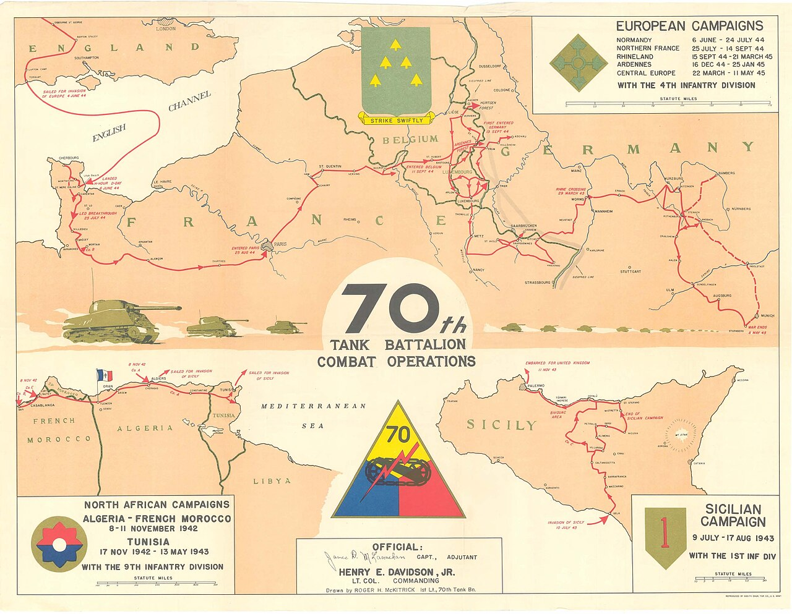
Rommel earned the nickname The Desert Fox for good reason — fast, aggressive, tactically brilliant, and almost impossible to pin down. The front line lurched hundreds of miles back and forth across the Libyan desert as each side gained and lost the advantage.
By the summer of 1942 the situation had become critical. Rommel had driven the British Eighth Army all the way back into Egypt, stopping at a small railway halt called El Alamein — sixty miles from Alexandria, barely a hundred miles from Cairo. For a brief and terrifying moment, the fall of Egypt felt genuinely possible. British civilians in Cairo began burning documents. The Suez Canal was mined in preparation for evacuation.
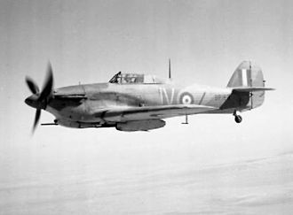
Into this world, a young man from East Ham arrived.
Ronald Andrews — Leading Aircraftman, No. 111 Maintenance Unit, Royal Air Force — was posted to Egypt as an aircraft engine mechanic. He was in his early twenties. His parents and younger brother had been killed in the London Blitz while he was away. His brother Herbert was also serving. There was nothing to go back to in East Ham. There was only the work in front of him.
RAF Middle East Command — the organisation Ronald served under — was at the centre of all of it. Every aircraft that could fly mattered. Every engine that could be rebuilt and returned to service was one more Spitfire, one more Hurricane over the desert. The men rebuilding those engines were not behind the front lines in any comfortable sense. They were the reason the front line held.
That work happened underground.

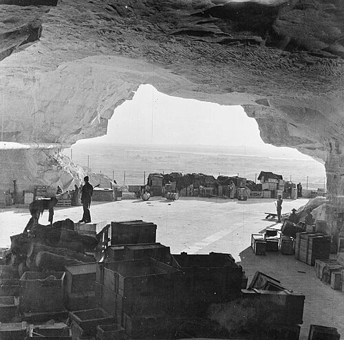
No. 111 Maintenance Unit didn't operate from a conventional airbase. The unit worked inside a network of ancient limestone caves cut into the Mokattam hills on the southern outskirts of Cairo — the same caves quarried four thousand years earlier for the casing stones of the pyramids at Giza.
The RAF had converted them into a fully functioning underground aircraft engine facility. Cool, hidden, and secure. Row upon row of workbenches stretching into the cave interior. Engines at every stage of assembly and repair. The rough limestone walls pressing in on either side.
Photography inside was strictly forbidden. It was a classified security area.
A colleague of Ronald's — referred to throughout his album only as Johnnie — smuggled a Leica camera past the guards. Ronald's album note reads simply:
“Johnie smuggled his Leica into the Caves ‘Security Area’ and took these shots of our work time.”

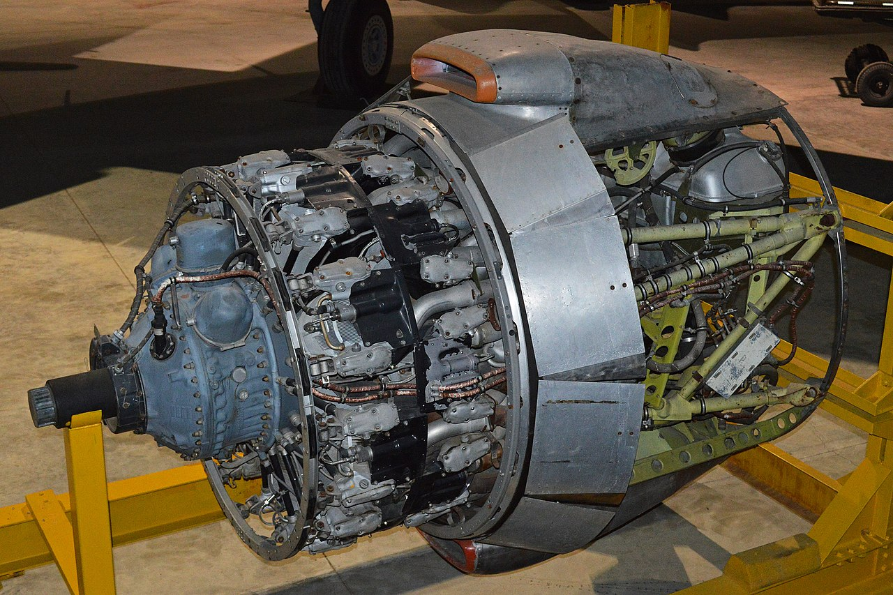
The engines coming through Ronald's hands were the most powerful in Allied service. The Pratt & Whitney Double Wasp — 2,200 horsepower, 18 cylinders arranged in two radial rows — powered the Hawker Tempest, the Corsair, the Hellcat. The tolerance on a crankshaft journal was measured to within ten-thousandths of an inch. Get it wrong and a pilot died. Ronald wrote the exclamation mark himself.
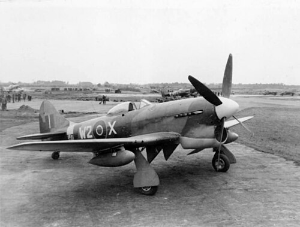
To Ronald's west, the Second Battle of El Alamein was being fought. General Bernard Montgomery had taken command of the Eighth Army and in October 1942 launched the offensive that would break Rommel's lines for good. Eleven days of grinding attritional warfare. Over a thousand tanks. A thousand aircraft in the air above them. Churchill would later call it “the end of the beginning.”
The aircraft those engines went back into were flying close air support over that battle — attacking Rommel's supply lines, knocking out his armour, keeping the Eighth Army alive. Every engine Ronald rebuilt in those caves was a direct contribution to what happened at El Alamein.
After El Alamein, the focus shifted. The Axis were driven from North Africa by May 1943, then the Allies invaded Sicily, then Italy. The demand for rebuilt engines didn't stop — it simply moved to a new theatre. Ronald's unit kept working.
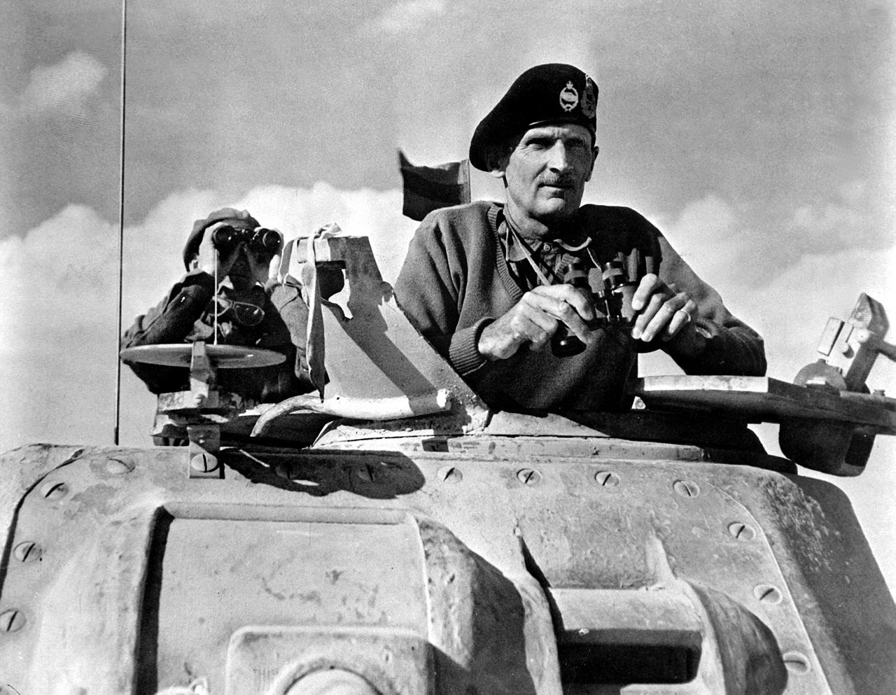
Between shifts in the engine bays, Ronald drew.
He had always drawn — and Egypt rekindled it. In whatever hours were left after work, he set up at a drawing board in his billet and copied portraits of the actresses he'd known from the pictures before the war. His own caption:
“Re-kindled the urge to draw — but in the copying work — this time Deanna Durbin… search for perfection it was only.”
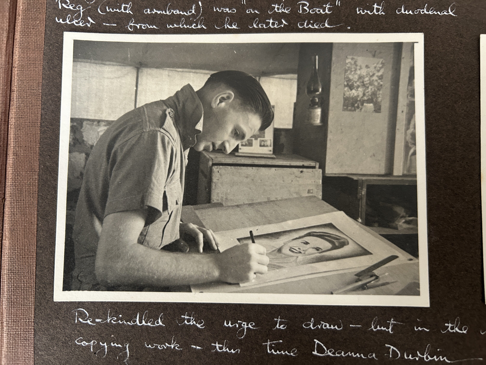
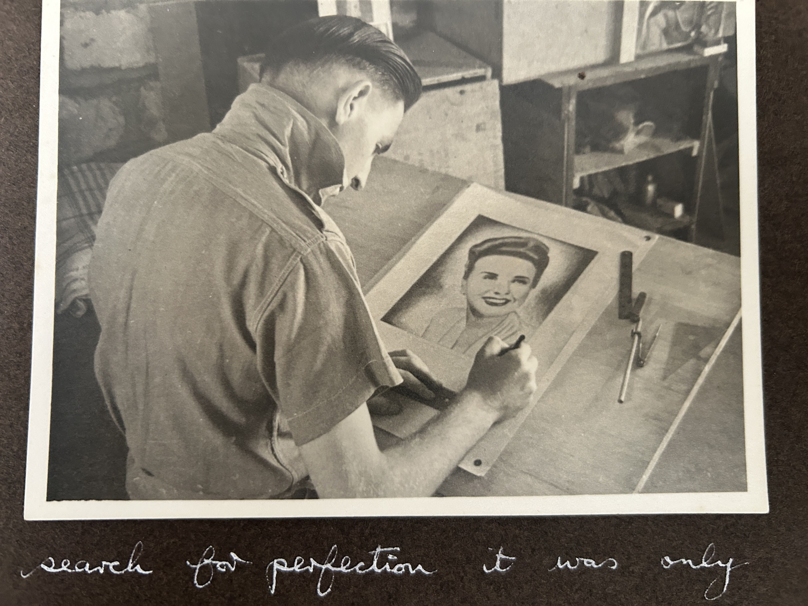
His commanding officers noticed something else. Ronald could draw, lay out a page, write. The unit had its own newspaper — the Tura Times — and Ronald was appointed Art Editor. His press card, signed by both the Editor and the Group Captain Commanding Officer, is still in the album:
“This is to certify that the undermentioned airman is Art Editor of the ‘Tura Times’, Unit newspaper of 111 M.U. R.A.F. It is requested that all possible help be given him in this connection. L.A.C. R. Andrews.”

Outside the caves, Cairo was one of the most extraordinary cities in the world to find yourself in during wartime. It was a city running at two speeds simultaneously — ancient and electric, timeless and urgent. Cosmopolitan in a way few cities anywhere were. Officers and enlisted men from Britain, Australia, New Zealand, South Africa, Poland, France, and America moved through its streets. Street vendors, diplomats, spies, journalists, and refugees all shared the same pavements. The Nile ran through it all.
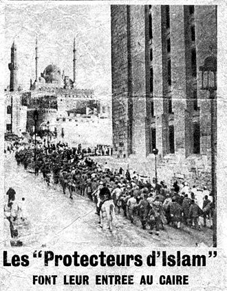
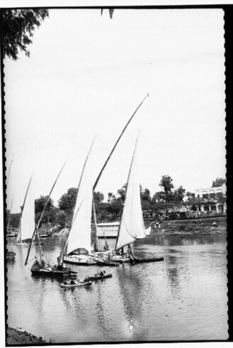
Somewhere along the way Ronald bought his first camera. The album records the moment without ceremony:
“My first camera — Bert Spencer sold it to me.”
He started shooting everything.

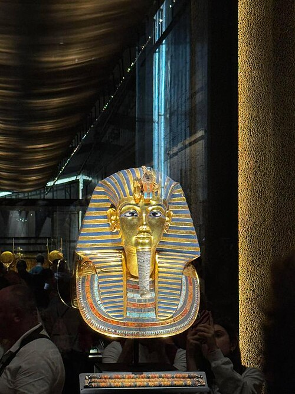
And then there was the museum.
The Tutankhamun treasures — discovered by Howard Carter in 1922 and considered the greatest archaeological find in history — were not on public display during the war. They had been quietly evacuated from the Egyptian Museum in Cairo and moved to a secure location for safekeeping.
That location was Tura.
Ronald's caves. The same limestone chambers where he measured crankshafts to ten-thousandths of an inch, where he assembled Double Wasp engines, where Johnnie had smuggled in his Leica. The gold funeral mask of a boy-king, undisturbed for three thousand years, had been in the next chamber along.
When the war ended and the treasures were returned to the museum, Ronald went to see them. He wrote his own note in the album — not the note of a tourist, but of someone who knew where those objects had been sleeping while the war raged outside:
“The treasures were stored in our caves during the War and later placed on view in the Museum. They were worth the journey to see.”

In Europe, Germany had surrendered in May 1945. But the war wasn't over. In the Pacific, the fighting against Japan continued — brutal, grinding, island by island. Britain and America were preparing for an invasion of Japan itself, with casualty estimates in the millions.
On 6th August 1945, an American aircraft dropped an atomic bomb on Hiroshima. Three days later, a second fell on Nagasaki. On 15th August, Japan surrendered.
VJ Day — Victory over Japan. The moment the entire war, every front, every theatre, every campaign, was finally over. Not just Europe. All of it.
Ronald Andrews was in Egypt. He was Art Editor of the Tura Times. He almost certainly laid out the front page.
“Peace After Nearly Six Years — First Peace Edition.”
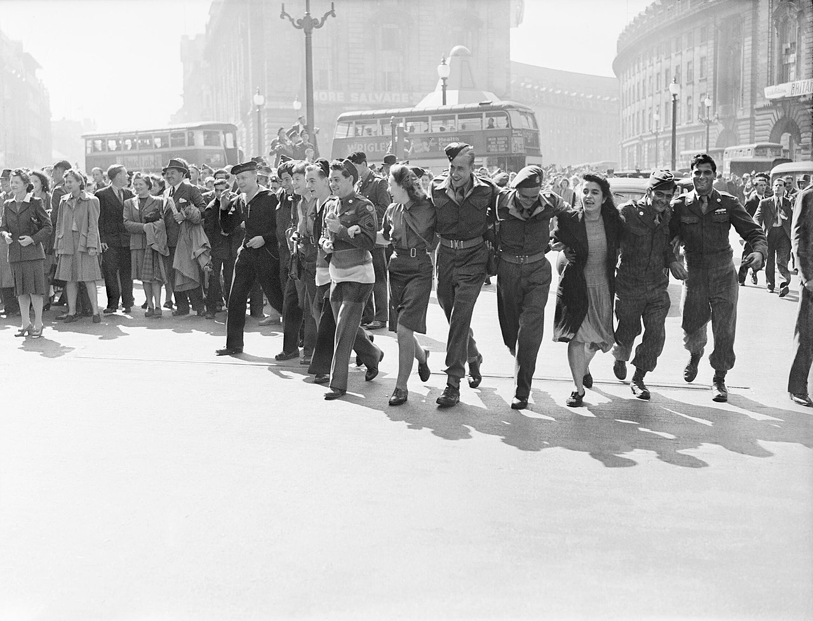
Back home, streets filled with people. In London, in cities across Britain, people poured out of their homes. Six years of war, over.
In a limestone cave south of Cairo, Ronald Andrews laid out the front page of the Tura Times. He kept a copy.
He came home.
East Ham was gone — bombed out, his parents and younger brother killed in the Blitz while he was away. He rebuilt quietly. He was in his mid-twenties, he had a press card, a photo album, a camera, and hands that could measure a crankshaft to within the width of a human hair.
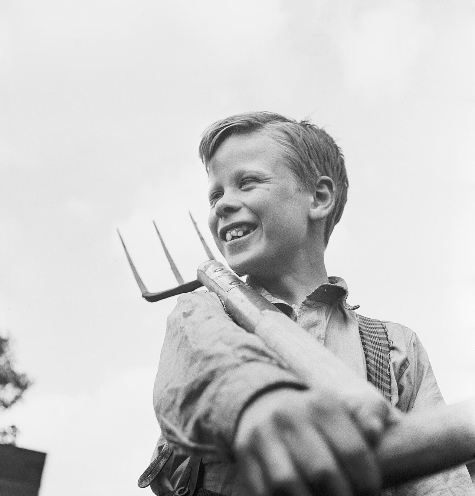
The East End Ronald had grown up in was physically transformed. Entire streets gone. Communities scattered. The people who had been there when he left were not all there when he returned.
He had spent years underground, rebuilding the engines that helped win a war in the desert. He had photographed the Nile in moonlight and the Opera Cinema in neon and the face of a three-thousand-year-old king. He had laid out the front page that told his unit the world had changed.
Now he had to rebuild a life.
On 11th February 1950, at St Mary's Church in Wanstead, he married Patricia Mary FitzMaurice. Her father Reg walked her down the aisle — the same Reg whose name appears in the note at the very top of the first page of this album, the man who was ill on the boat to Egypt and who later died from it. Two families, running in parallel across the entire war, finally meeting at an altar in East London.
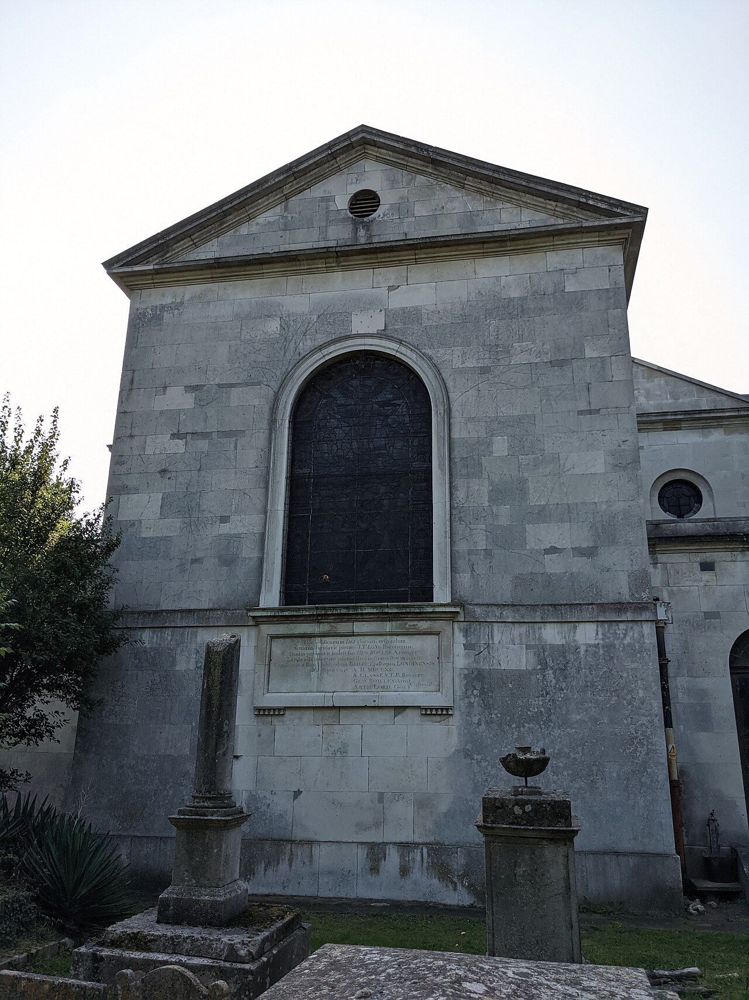